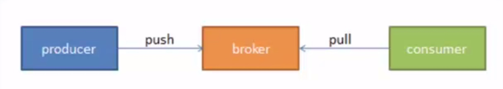
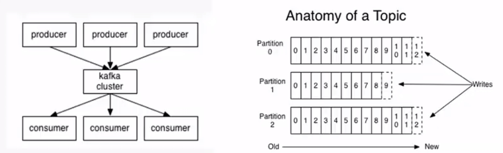
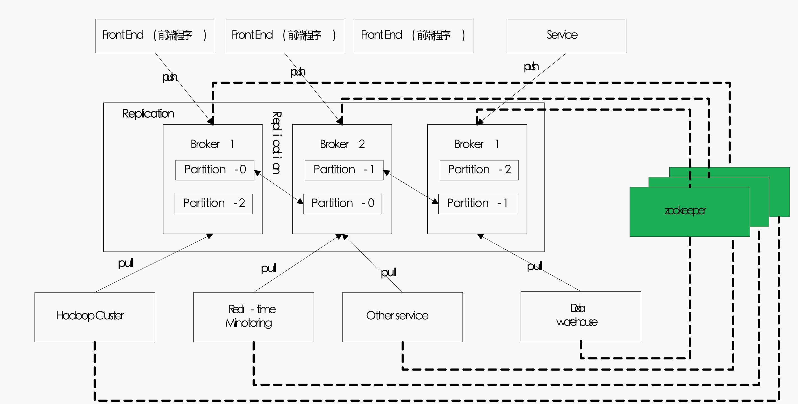

kafka 相关概念
AMQP协议

- 消费者（Consumer）:从消息队列中请求消息的客户端应用程序
- 生产者（Producer）:向broker发布消息的客户端应用程序
- AMQP服务器端（broker）:用来接受生产者发送的消息并将这些消息路由给服务器中得队列
kafka的架构

- 主题(topic):一个主题类似于新闻中的体育，娱乐，教育等分类概念，在实际业务中通常一个业务一个主题
- 分区(partition):一个topic中的消息数据按照多个分区组织，分区是kafka消息队列组织的最小单位， 一个分区可以看做是一个FIFO队列;(分区是提高kafka性能的关键)

- Replication:为了保证分布式可靠性，kafka0.8 开始对每个分区的数据进行备份（不同的broker上），防止其中一个Broker宕机造成分区数据不可用
- zookeeper:一个提供分布式状态管理，分布式配置管理，分布式锁服务等的集群